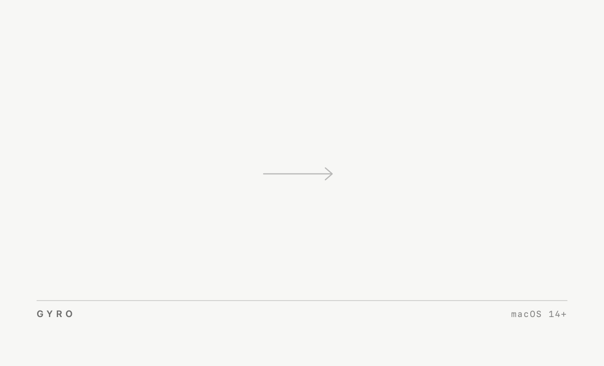

GyroApplications

icon names are drawn by Finder, not by the artwork — approximated here at 11.5 pt.
geometry: window 660 × 400 pt · icons at 180 / 480 · names 256–292 · rule 328 · captions 347.
no version string by design — a static PNG cannot follow the next tag; the only caption is macOS 14+.